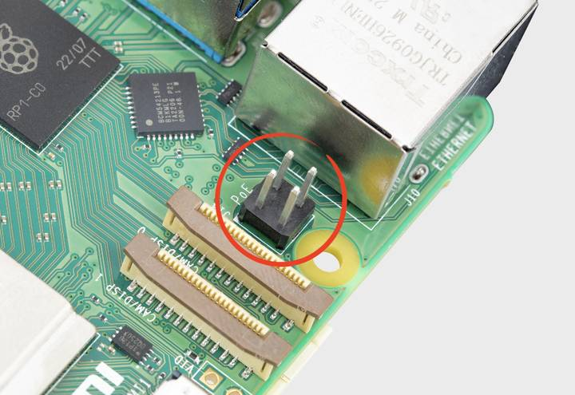

Power over Ethernet connector

Figure 1. 5 PoE header
The Ethernet jack on 5 is PoE+ capable, supporting the IEEE 802.3at-2009 PoE standard.
The Ethernet jack on 4B and 3B+ is PoE capable, supporting the IEEE 802.3af-2003 PoE standard.
All models with a PoE-capable Ethernet jack require a HAT to draw power through the Ethernet port. For models that support PoE, we recommend the PoE HAT. For models that support PoE+, we recommend the PoE+ HAT.
Related topic: Typical power requirements